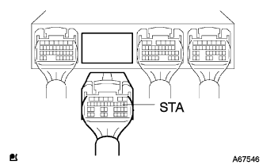
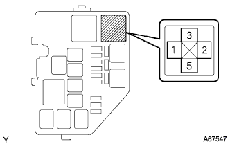

EFIシステム スタータ系統 |
| 手順1 | TaSCANデータ読み取り（スタータ信号） |
TaSCANの画面表示に従って操作を行い、[データモニター]を選択する。
スタータを作動させたときの、データを読み取る。
| イグニッションスイッチ位置 | TaSCAN表示内容 |
| ON | OFF |
| STA | ON |
|
| ||||
| NG | |
| 手順2 | ワイヤハーネスまたはコネクター点検（エンジンコントロールコンピユータ-スタータリレー） |
エンジンコントロールコンピユータのコネクタBを切り離す。
スタータリレーを取りはずす。
|   |
SST(トヨタエレクトリカルテスター)を使用して、エンジンコントロールコンピユータの車両側コネクタ←→スタータリレー取り付け用リレーブロックホルダ間の導通を点検する。(端子配列は参照)
| 測定端子(端子名) エンジンコントロールコンピユータ←→スタータリレー取り付け用リレーブロックホルダ | 基準 |
| B9(STA)←→3 | 導通があり他の端子間およびボデーアース間と短絡がないこと |
|
| ||||
| OK | ||
| ||